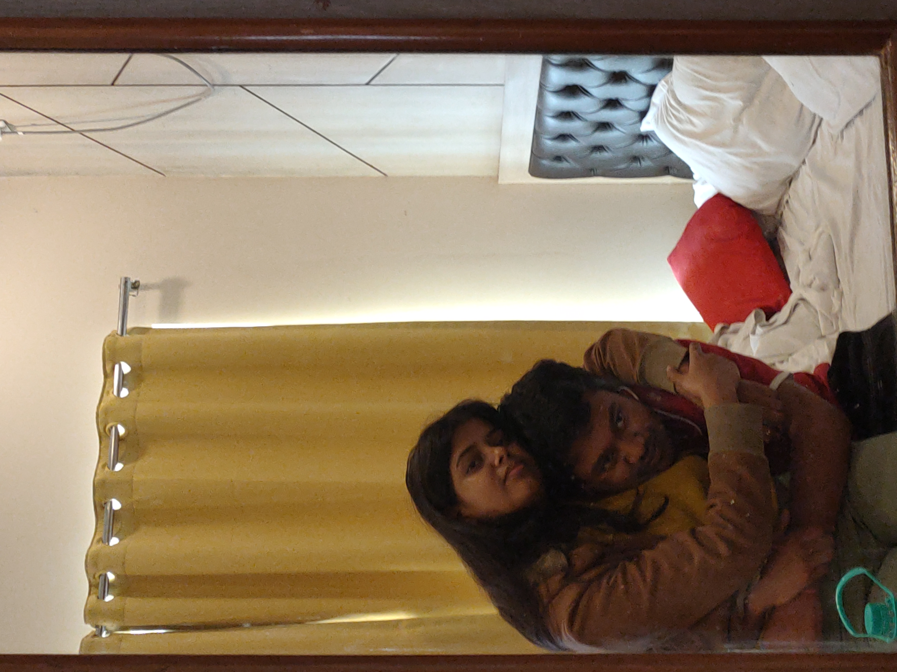

I hope my apology reaches you with the understanding that my words are a reflection of the profound regret and remorse that has settled within me. There are no excuses for the pain I've caused, and I am writing to you with a heavy heart, fully aware of the magnitude of my actions. I owe you an apology, not just for a specific instance but for a pattern of behavior that has persisted for far too long. For the past months, I have been blind to the toll my words and actions have taken on you, and for that, I am truly sorry. I want to express my deepest regret for blaming you in every argument, for making you cry countless times, and for letting our conflicts be marred by negativity. I now realize the emotional weight this placed on you, and I am genuinely sorry for the hurt and anguish I've caused. It pains me to acknowledge that during moments when you needed my support the most, I was callous and cold-hearted. Your unwavering love and support were met with indifference, and for that, I am ashamed. I failed to recognize the impact of my words on your mental health, and I want you to know that I am committed to being a source of strength and understanding moving forward. I am profoundly sorry for the harsh words I uttered in moments of anger. I understand that words, once spoken, can linger like scars, and I take full responsibility for the wounds I've inflicted. It was never your burden to bear, and I am sorry for making it so. I see now that your love endured through your problems, struggles, and even my own shortcomings. Your resilience and unwavering affection highlight the depth of your character, and I am blessed to have you in my life. As we navigate through this difficult time, I am committed to change. I am committed to treating you with the kindness, respect, and love that you deserve. Your forgiveness means the world to me, and I am dedicated to proving that I can be the partner you need—one who uplifts, supports, and cherishes you. I understand that actions speak louder than words, and I am ready to demonstrate the change I am promising. Please know that I value you more than words can express, and I am devoted to making amends and rebuilding the trust that I have broken. With a heart full of remorse and a commitment to change, [~VIVEK] 
I hope this letter finds its way to your heart, carrying the sincere emotions that I struggle to express in mere words. You are the sunshine in my life, the beat in my heart, and the reason I smile every day. I am immensely grateful to have you by my side, and I cherish every moment we spend together. Your love fills my days with joy and warmth, and I can't imagine my life without you. You are my everything, and I love you more than words can express. Thank you for being the amazing person you are and for bringing so much love into my life. Your kindness, patience, and unwavering support mean the world to me. In moments of darkness, your love has been my guiding light, and for that, I am eternally thankful. I am blessed to have you in my life. Your presence is a blessing that brings peace to my chaotic world, and I cherish every shared laugh, every shared tear, and every shared dream. In your embrace, I find solace, and in your laughter, I find pure happiness. Together, we've weathered storms and celebrated victories, and I am confident that our love will continue to grow and flourish. The most incredible part of my life is you. Your love has transformed my world in ways I never thought possible, and I am grateful for the love, strength, and inspiration you bring into my life every day. As we navigate the challenges that life presents, I want you to know that my love for you only deepens with each passing day. You are the anchor in my stormy seas and the melody in my quiet moments. Your presence is a source of comfort and joy, and I am honored to call you mine. Thank you for being my partner, my confidante, and my best friend. I promise to cherish and love you unconditionally, today and always. With all my love,
Forever yours,
YOUR BABY ❤